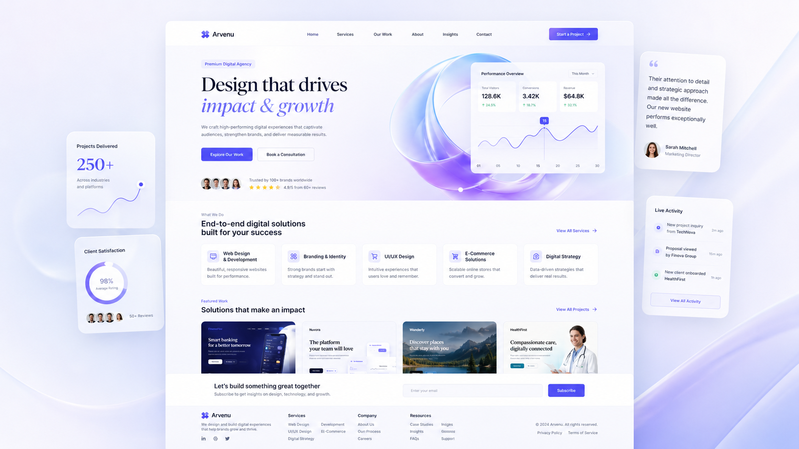
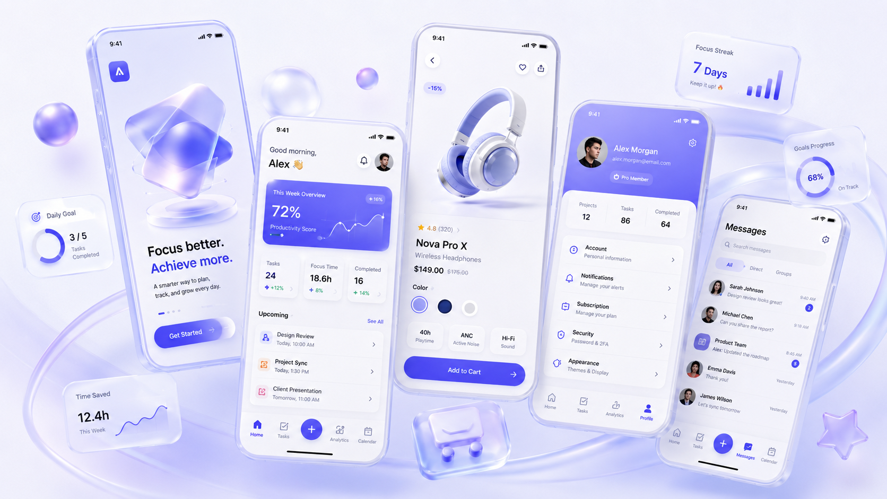
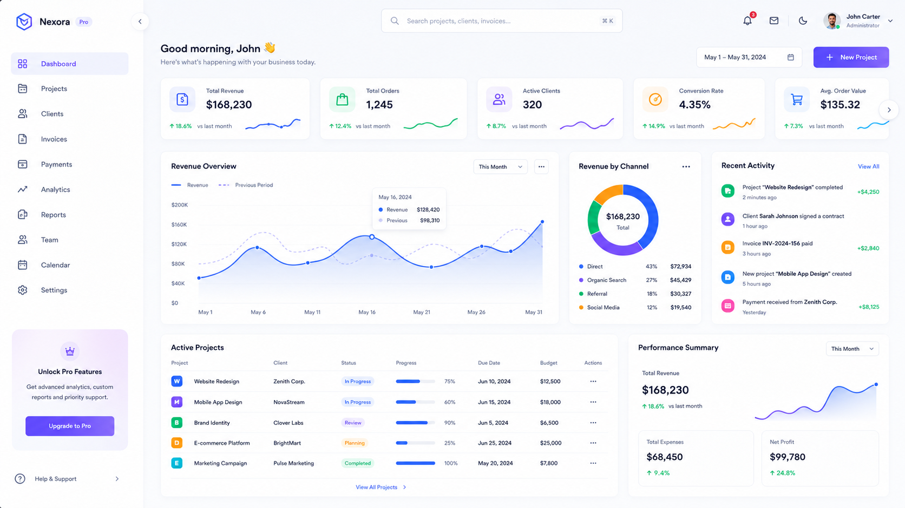
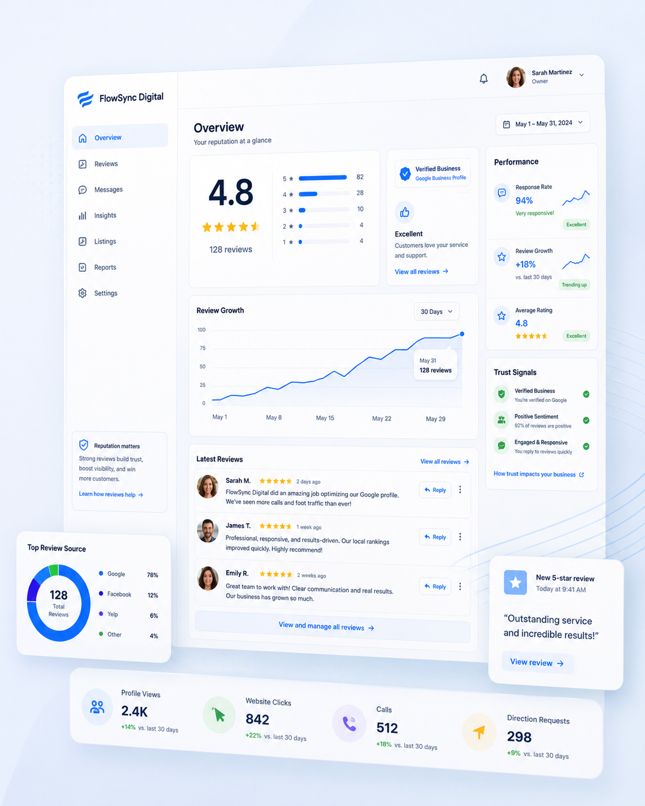

Clear interfaces with moving visual energy.
I design clean landing pages, website screens, dashboards and app interfaces with stronger structure, better flow, and the kind of clarity that makes the build easier later.
Design System
Colors, spacing, cards, buttons, and reusable screen rules that keep the interface consistent.
Examples of the interface work I can shape.
This section shows the kind of interface direction I work on: website layouts, mobile flows, dashboard structure, and cleaner visual systems built to feel easier to use.

Website UI
Homepage sections, service layouts, and redesign directions with stronger visual hierarchy.

Mobile App
Onboarding, app screens, profile views, and product flows with clearer actions and cleaner movement.

Dashboard UI
Dashboard structure, card systems, panels, and data screens that stay readable and organized.
A focused example of cleaner interface direction.
This kind of project usually starts with cluttered layout or weak hierarchy. The goal is to simplify the path, make the content easier to scan, and give the screen a more confident visual system.

Simple process, cleaner result.
The UI and UX process should stay calm so the final interface feels stronger, easier to build, and easier to trust.
Understand
Check the page goal, user path, screen problems, and visual direction.
Design
Create layout rhythm, component rules, photo areas, and a cleaner hierarchy.
Polish
Refine mobile behavior, CTA clarity, spacing, and the final screen feel.
Need a cleaner UI/UX direction?
I can shape a landing page, dashboard, app screen, or redesign direction so the visual system feels organized before the build gets heavy.
Contact Me